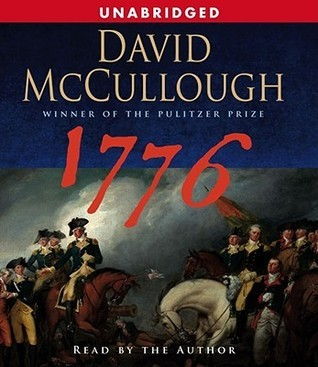

"1776"
- Read on 2008-12-27
- Rating: ️️️️️
- Format: 📖 (386 pages)
Sir George Otto Trevelyan said, "It may be doubted whether so small a number of men ever employed so short a space of time with greater and more lasting effects upon the history of the world."
I completely agree. What an integral part of our country's history, as well as the world, and what a well-written glimpse into one of the most (if not the most) pivotal years in that time period. I'm not sure I've ever read a non-fiction book that held my attention as well as this did. I eagerly look forward to another of McCullough's.
- Prior: Executive Power
- Next: Show Me How
- Read on 2015-08-13
- Rating: ️️️️️
- Format: 🎧 (11 hours 33 minutes)
Second Review
I re-read this book for a book club, and I have to say, I still love this book. What struck me this time through was the grit shown by our forefathers. They stood with boldness in circumstances that seemed so extremely discouraging. Simply put, they wanted their freedom, and were willing to pay the ultimate price for it. I particularly liked this quote from George Washington:
I shall constantly bear in mind that as the sword was the last resort for the preservation of our liberties, so it ought to be the first thing laid aside when those liberties are firmly established.
Washington himself seemed like he was simply trying his best. At times, it wasn't enough, but ultimately it clearly was. What an incredible person. Had a small number of things had a different outcome, I can only imagine how that would have impacted the final result of this war. Washington's optimism and leadership seemed second to none.
This was the first book I ever read by David McCullough, and he hasn't disappointed with any other book. His writing is well-researched, smooth flowing, and pulls you in better than you would expect (especially considering the stereotype non-fiction books have, at times). This being said, I wish this book were a bit more encompassing. I understand the book is perfectly true to its title, and largely holds to the year of 1776. That being said, I'd love to have McCullough write about the entire Revolutionary War (though some would argue he did this with John Adams), or to take in more of the country's sentiments and activities during this year, since this book is so focused on the war and troops.
Lastly, McCullough himself reads the audiobook, and does a pretty good job. I'm largely opposed to authors narrating their own audiobooks - leave it to the voice actors, it's what they're good at. Despite that sentiment, McCullough here performs just fine.
- Prior: Lord of Chaos
- Next: A Crown of Swords